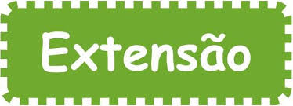

Sistema de Cadastro de Projeto de Extensão
Este sistema foi desenvolvido, baseado no trabalho e explicações dados em sala de aula,
vídeos(tutorial) disponibilizado pelo professor no you tube.
Os principais objetivos do sistema são:
- Armazenar a relação entre pessoas, temas e cursos envolvidos no projeto;
- Facilitar a busca por pessoas,temas e projetos já cadastrados
Trabalho de Conclusão de Disciplina de Desenvolvimento de Sistemas.
Professor: Carlos Eduardo.
Aulan: Elizabeth Cristina Nascimento Fortunato
01/06/2018